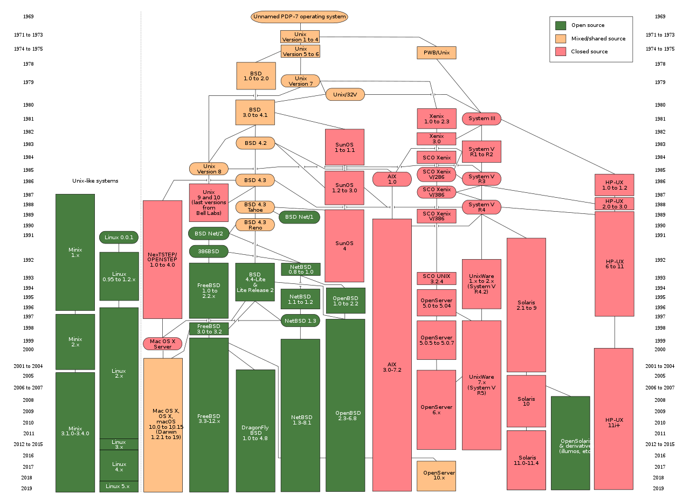

Alan Turing
Alonzo Church
Claude Shannon
Ken Thompson
Motivatie en prijs
Unix
Programmeertaal B
Impact op samenleving
Samenwerking
Impact op samenleving

Foto door Eraserhead1, Infinity0, Sav_vas
Wat betekende Unix toen voor de samenleving?
aw
Terug naar boven